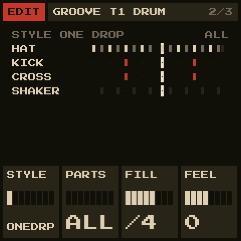
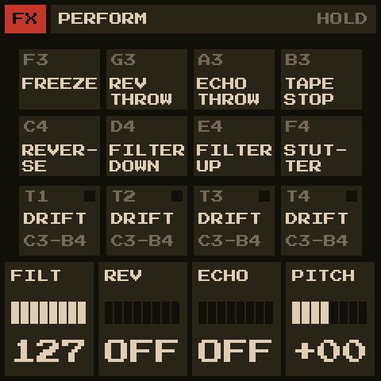

On the screen
Na tela
240 × 240





A roots reggae firmware for the M-VAVE FM-1. A whole band synthesized on the FM-1, and a dub desk to version the tune while it plays.
Um firmware de reggae roots para o M-VAVE FM-1. A banda inteira sintetizada no FM-1, e uma mesa de dub para versionar a música enquanto ela toca.
The drummer is here: DRUM, a roots kit of 20 synthesized drums, and GROOVE, eight styles it plays by itself with a drummer's feel (one drop, rockers, steppers, flyers, rocksteady, early, rub-a-dub, dub). Next: the band's lines (skank, bubble, bass) and the dub desk (spring, tape echo, VERSION). Not tested on an FM-1 yet, and not on the Firmware Hub: play it in the emulator meanwhile.
O baterista chegou: DRUM, um kit roots de 20 tambores sintetizados, e GROOVE, oito estilos que ele toca sozinho, com mão de baterista (one drop, rockers, steppers, flyers, rocksteady, early, rub-a-dub, dub). Depois: as linhas da banda (skank, bubble, baixo) e a mesa de dub (mola, eco de fita, VERSION). Ainda não testado num FM-1, e fora do Firmware Hub: enquanto isso, toque no emulador.
Each kit playing its own style by itself: load it, press PLAY, and RIDDIM's drummer plays, four bars, the fourth with a fill. Never twice the same: the cross-stick laid back, ghost notes that come and go, every hit a little different.
Cada kit tocando o seu estilo sozinho: carregue, aperte PLAY, e o baterista do RIDDIM toca, quatro compassos, o quarto com a virada. Nunca duas vezes igual: o cross-stick atrás do tempo, ghost notes que vêm e vão, cada golpe um pouco diferente.


./build.sh → build/riddim.fwsc) and install it with python3 tools/fm1_install.py build/riddim.fwsc (Python 3, pip install mido python-rtmidi). 0.1 has not been on an FM-1: at your own risk.
Compile do código (./build.sh → build/riddim.fwsc) e instale com python3 tools/fm1_install.py build/riddim.fwsc (Python 3, pip install mido python-rtmidi). A 0.1 nunca rodou num FM-1: por sua conta e risco.
FM-1_932The band's sounds made natural, as the drums now are: never two notes alike, the force in the tone.
Os sons da banda naturais, como a bateria já é: nunca duas notas iguais, a força no timbre.
Lines over the chord you hold: SKANK on 2 and 4, the organ's BUBBLE, a BASS that leaves room, HORNS.
Linhas sobre o acorde que você segura: SKANK no 2 e no 4, o BUBBLE do órgão, um BASS que deixa espaço, HORNS.
A spring reverb, a tape echo that runs away, THROW, mutes on the bar, and VERSION, the dub that mixes itself.
Reverb de mola, eco de fita que dispara, THROW, mutes no compasso e VERSION, o dub que se mixa sozinho.
Every sound synthesized. No record samples, no famous riddim transcribed: the styles are written in the style.
Todo som sintetizado. Nenhum sample de disco, nenhum riddim famoso transcrito: os estilos são escritos no estilo.